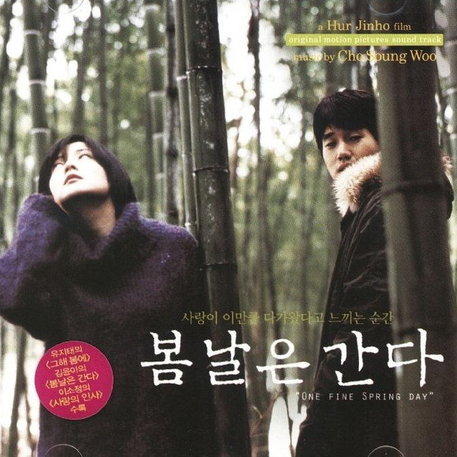

안녕하세요, 라보엠입니다.
3~5월은 봄, 6월은 보통 여름의 시작이라고 생각하게 마련이죠. 봄의 끝자락에서 꼭 생각나는 명곡, 김윤아의 ‘봄날은 간다’를 소개해드리겠습니다. 2001년 허진호 감독의 영화 OST로 발표된 이 곡은, 자우림의 보컬 김윤아가 솔로로 처음 선보인 대표작이기도 합니다. 봄의 아름다움과 이별의 쓸쓸함, 그리고 그리움이 한데 어우러진 이 노래는 계절이 바뀔 때마다 다시 찾게 되는 명곡입니다.
영화 봄날은 간다와 함께 피어난 노래
‘봄날은 간다’는 영화의 마지막 크레딧을 장식하며, 주인공들의 사랑과 이별을 담담하게 마무리합니다. 특별한 사건 없이, 시간이 흘러 자연스럽게 멀어진 두 사람의 이야기가 이 곡과 절묘하게 맞닿아 있습니다. 김윤아의 목소리는 영화 속 상우와 은수의 감정을 대변하듯, 봄날의 끝에서 느끼는 아련함과 허무함, 그리고 다시 피어날 희망까지 섬세하게 그려냅니다.
이 노래는 이별의 감정을 노래하는 것에 그치지 않고, 인생의 찰나와 덧없음을 함께 담아냈습니다. 김윤아 특유의 묵직하고 쓸쓸한 음색은, 화려한 봄날의 풍경과 대비되며 곡의 분위기를 더욱 처연하게 만듭니다. 간결한 멜로디와 절제된 편곡, 그리고 비음 섞인 중저음의 보컬이 어우러져, 사랑의 아픔과 그리움을 고스란히 전달합니다.
봄날은 간다 노래 가사
눈을 감으면 문득
그리운 날의 기억
아직까지도 마음이 저려 오는 건
그건아마 사람도
피고 지는 꽃처럼
아름다워서 슬프기 때문일 거야, 아마도.
봄날은 가네 무심히도
꽃잎은 지네 바람에
머물 수 없던 아름다운 사람들
가만히 눈감으면 잡힐 것 같은
아련히 마음 아픈 추억 같은 것들
봄은 또 오고
꽃은 피고 또 지고 피고
아름다워서 너무나 슬픈 이야기
봄날은 가네 무심히도
꽃잎은 지네 바람에
머물 수 없던 아름다운 사람들
가만히 눈감으면 잡힐 것 같은
아련히 마음 아픈 추억 같은 것들
눈을 감으면 문득
그리운 날의 기억
아직까지도 마음이 저려 오는 건
그건 아마 사람도 피고지는 꽃처럼
아름다워서 슬프기 때문일 거야, 아마도
이 곡의 가사는 한 편의 시처럼, 지나간 사랑과 계절을 조용히 떠올리게 합니다.
눈을 감으면 문득 그리운 날의 기억
아직까지도 마음이 저려 오는 건
그건 아마 사람도 피고 지는 꽃처럼
아름다워서 슬프기 때문일 거야, 아마도
봄날은 무심히 지나가고, 꽃잎은 바람에 흩날립니다.
머물 수 없던 아름다운 사람들, 그리고 잡힐 듯 아련한 추억 같은 것들.
봄은 또 오고, 꽃은 피고 또 지고, 그 아름다움이 슬픔이 되는 순간을 노래합니다.
맺음말
김윤아의 ‘봄날은 간다’는 아름다움과 슬픔이 공존하는, 봄의 끝에서 듣기 좋은 명곡입니다. 화려한 봄날이 뒷모습을 보이며 떠나는 순간, 그 찬란함이 슬픔으로 남는다는 사실을 노래합니다. 계절은 반복되지만, 그때의 인연과 감정은 다시 오지 않습니다. 그래서 이 곡은 봄이 가는 이맘때, 혹은 마음이 허전해질 때마다 자연스럽게 떠오르는 노래입니다.
지나간 사랑과 계절, 그리고 그리움이 마음을 조용히 어루만지는 이 노래와 함께, 여러분의 봄날도 오래도록 기억 속에 머물길 바랍니다. 봄이 가는 이 시점에서 김윤아의 목소리와 함께 지난 시간을 천천히 떠올려보는 건 어떨까요?
아름다워서 더욱 슬픈, 그 찰나의 순간을 노래하는 ‘봄날은 간다’가 여러분의 마음에도 잔잔한 여운을 남기길 바랍니다.
